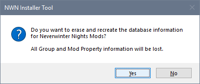
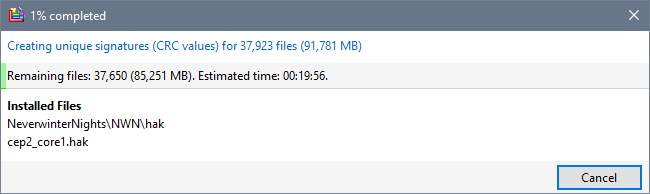

There are no predictable circumstances under which it should be necessary to recreate the Installer Tool's database files.
- Click Rebuild Database from the Tools menu.
- Click Yes if you want to proceed.

- The existing database files are moved to the Recycle Bin and the Installer Tool is restarted.
- Your Profile is loaded and you are asked to specify your Group Set preference.

- The checksum values for all files is calculated. This can take some time to complete depending on how many files need to be processed.

- The database has now been rebuilt without your Mod grouping or Property information.
If you have a backup or pre-version 5.0 data files, you can use Recover Groups and Recover Mod Properties from the Tools menu to restore information previously defined.
Related Topics
|

|
Click the menu illustration to view information about other tools.
|